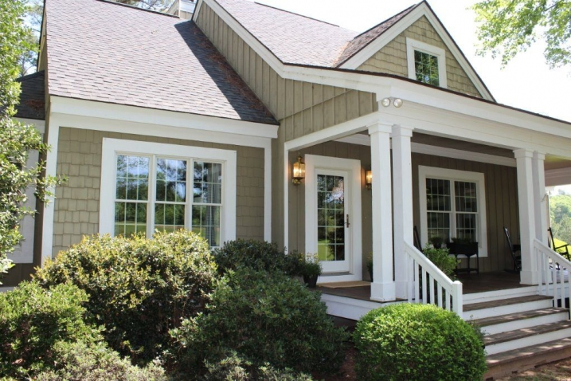

.png)
.PNG)
.PNG)
.PNG)
.PNG)
.PNG)
.JPG)
.JPG)
.PNG)
.PNG)



Happy Friday everyone! I have run away from home. Not really, but I have run over to very kind Marty’s blog, A Stroll Thru Life. She has a post up today that is featuring our home here at Talk of the House. Wasn’t that super sweet of her? So run on over there, and tell her, “Hello.” Then I hope you enjoy finding all the rooms from our home in one post, AND on top of that, there has been a fun series of home tours there this week with 26 homes. Look for the details on Marty’s sidebar. You definitely should check them out while you are there.
And while we are talking about home tours, I want to show you my favorite spaces from the Southern Living Idea House, 2013 near Nashville. First, I love the exterior with all its porch space.
And I think that richly colored kitchen is very pretty.
Of course I like this porch (and I really need one of those trees for a corner in our family room!)
The bunkies look like perfect little cottages.
My favorite room in the entire house is….the laundry room! It is practical and pretty…so very Phoebe Howard.
If you are near the Nashville area, the house will be open for tours every Wednesday through Sunday, now through December 29. It looks like it would be a fun one to see!
Now run on over to Marty’s blog and take a look at some of those home tours she has there, (including mine in her post today please. :))
Enjoy your weekend!


.PNG)
Hey Kelly! I love having your whole house tour in one spot! I’ve pinned it on my Awesome House Tours board for easy reference. I have a question though…we are getting ready to build and we’re looking for plans… you know all that fun stuff…I looked at your plan and I was wondering if you could post an actual picture of how you changed it or try to describe what changes you made. Did you add any square footage? Thanks a bunch. I know you’re crazy busy now with school starting so I won’t hold my breath. We’re from Georgia too but now living in Virginia so I remember those early school starts.
Hi Kelly…that Southern Living home is on my list to visit..already planning a trip there with friends!…I am drooling over it as I read and study the article in this months Southern Living…Will hop to to sweet Marty’s !!!
——————————————————————————
You get to go to the best places, Shirley! Thanks for visiting the tour over at Marty’s and leaving your super kind comment there.
Kelly
I LOVE this house. I read SL on my Kindle now and there were videos of the room with Phoebe telling why she picked what and put this there and etc. I really enjoyed it. I do have to say that I didn’t like th emaster bedroom, but just loved everything else.
Wow! I loved seeing and hearing about your house over at Marty’s blog…isn’t she a doll? It was a real treat to see your home.
—————————————————————————–
Thank you for coming over to visit from Marty’s site. She IS a doll and just so gracious to give other blogger’s such wonderful shout outs! I am glad you enjoyed seeing our home over there, and I hope you will come back to visit again.
Kelly
I tell you I never get tired of looking at pics of your beautiful home! It is just so……..FRIENDLY looking!!!! I Love it! I would also love if my laundry room looked as fabulous as the one Phoebe Howard designed! Thanks for sharing! Happy Weekend!
—————————————————————————–
Jennifer, thank you for your sweet compliments! Friendly looking is so nice to hear. I wish we could transform our laundry closet into a laundry room like that one- especially with all those windows…kind of hard to do with a closet that is not on an exterior wall! 🙂
Kelly
My goodness!! I feel like I got to have a double dessert– by having a new posting from you with the Nashville house tour and then hopping over to your other guest spot and tour your posting over there!! What fun! Cute new picture of you sitting by the fence with your toes in the grass! Every time I tour your house I see and learn something new– and I never get tired of seeing your home! You did real good by not talking but there were many things you surely could/should have said and hopefully the readers will come over to TOTH and read and view your archives and be blessed by doing so!! PS my bookcase and entertainment center is finished as of yesterday! So pleased with it! Now on to the bathroom remodeling project!!:)
——————————————————————————-
Slow down! You are making me feel like we are moving at a snail’s pace around here! (but then we are.) Perhaps I need to hire you to get some things accomplished on the house here. 🙂 Your contractor must be phenomenal!
Kelly
Loved your home tour at Marty’s place. Beautiful!!
——————————————————————————
Thank you Mary Ann! Your home is gorgeous, and I love the garden shop you wrote about in your latest post. Thank you for stopping by here.
Kelly
I truly love your home…..I adore the color red……. and gingham, plaids and checks. I have never known anyone who like them as much as I do until I stumbled upon your blog.I look forward to your posts and being inspired. Thanks for the tour!
—————————————————————————–
We must be twins separated at birth, Martha because we seem to have all the same tastes!
Kelly
Hi Kelly! So nice to meet you! I came over from Marty’s and LOVED the tour. Your home is gorgeous, I love every inch. I will be following you now. The SL house is beautiful too. Sure would LOVE to have that porch! XO, pinky
Kelly,
I would love to tour that Southern Living home in Nashville some day. Thanks for sharing the pictures of it with us!
Hi Kelly…..just stopping in from Marty’s blog! I am absolutely in LOVE with your beautiful home. Thank you so much for sharing…:) I read at the end that you’re a teacher…so am I. What do you teach? I look forward to visiting again. Have a wonderful school year!
Blessings, Vicky
—————————————————————————–
Oh I am so glad you came over from Marty’s blog! You know how crazy and time consuming the start up of a school year is, so please forgive my delay in replying to comments these last couple of weeks. I taught 1st grade forever, and second for a few years, third grade for 12 years, and this year I am to be an eip math teacher – one who floats from room to room helping students with math. I begged for the job and hope that it will give me more time to work on the blog with not having a homeroom for the first time in 3 decades. I hope your school year is a great one!
Kelly
Loved the tour over at Marty’s….LOVE your house. I guess I never realized or didn’t read the post that you pretty much designed your house yourselves….NICE. JOB.! 🙂
—————————————————————————–
Thanks Karen! At the time we built, the children were very young, and the master bedroom was on the other side of the house in that plan. I loved the exterior, but we did not like the master bedroom so far away from the children’s rooms…so that was the start of all the changes. Major domino effect after that!
Kelly
Kelly,
I hardly ever leave a comment for you but let me just say that your blog is by far the best one I visit!!! I get so excited when I see an email alerting me that you have a new post…well actually I have you bookmarked so I can check your site faster that way!
Every post gives me an idea to dream about! My husband and I are soon to rip out a small and pretty sad looking 1970’s kitchen. The cabinet guy was over last night and I was trying to make a decision about whether to paint the cabinets a gray shade where the cherry counter top will be used. I just opened today’s post and there was that gorgeous wooden counter top with the painted cabinets on the island. Decision made!
Good luck in your new school position! After 30 years of teaching
I just retired…woo hoo!! You need to try it! I think you would be an awesome professional decorator and event planner in your second life!
Thanks again!!!!!!!!!!!!
——————————————————————————–
Wow…so many decisions to make in a kitchen makeover…certainly NOT an easy task! I am glad that you could get that decision made by visiting the blog here, and I bet your cabinets will look great! Enjoy your retirement. Maybe one day I will be able to do that too!
Kelly
You did great over at Marty’s. Loved the tour!!!
I NEVER get tired of touring your beautiful home. It is truly one of my favorites. You have an amazing talent and your home is so very welcoming. Love your blog and am so glad I found you!
——————————————————————————-
Goodness! How sweet of you to say all that, Talia! I am glad you enjoy the house and the blog. I am so glad you found me too! 🙂
Kelly